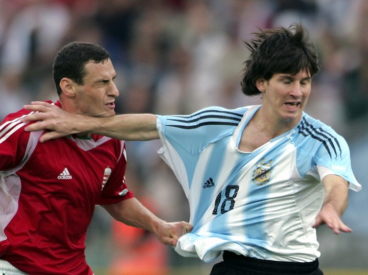
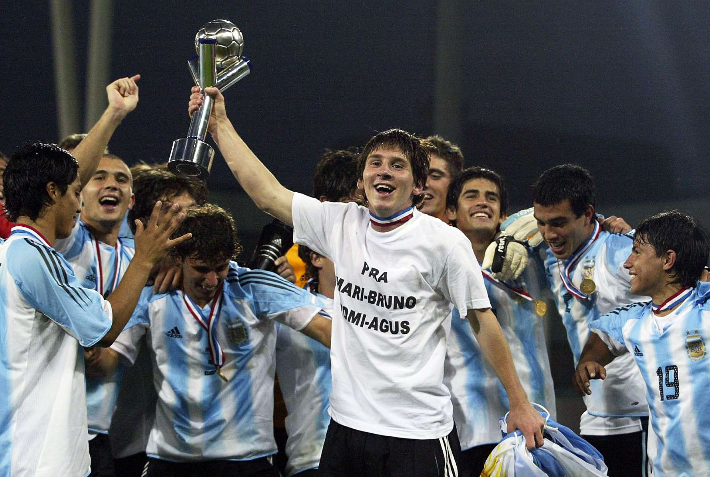

El inicio de Messi en la selección
Lionel Messi, conocido mundialmente por su destreza y talento en el FC Barcelona, también ha tenido una carrera significativa con la selección nacional de Argentina. Su trayectoria con la selección comenzó a una edad temprana, mostrando su potencial y pasión por representar a su país en el escenario internacional. Messi debutó con la selección mayor de Argentina el 17 de agosto de 2005, en un partido amistoso contra Hungría.
Este debut fue memorable, aunque por razones inesperadas, ya que apenas un minuto después de entrar al campo, fue expulsado por una controvertida decisión arbitral.

A pesar de este inicio desafortunado, Messi no se dejó desanimar y continuó trabajando arduamente para establecerse como una pieza clave del equipo nacional. Antes de su debut con la selección mayor, Messi ya había mostrado su talento en las categorías juveniles. En 2004, participó en el Campeonato Sudamericano Sub-20, y en 2005, lideró a la selección argentina Sub-20 a la victoria en la Copa Mundial Sub-20 de la FIFA en Países Bajos. En este torneo, Messi fue la estrella indiscutible, ganando el Balón de Oro como mejor jugador y la Bota de Oro como máximo goleador.
